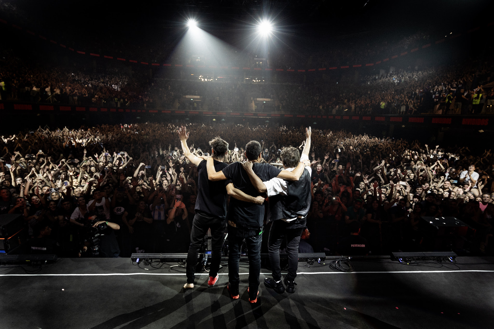

Presentación
Divididos es una banda argentina de rock, formada en 1988 por Ricardo Mollo y Diego Arnedo, ex integrantes de Sumo. Se les conoce como "La Aplanadora del Rock" por su sonido potente y enérgico, y se caracterizan por mezclar rock con influencias folclóricas y letras singulares. Su música también explora géneros como el funk y el reggae, con una propuesta sonora que ha evolucionado a lo largo de su trayectoria.
Discografía de la banda
Algunos de los álbumes
Disco 1
- Año: 1989
- Album: 40 dibujos ahí en el piso
- Genero: Rock-Folk
Disco 2
- Año: 1991
- Album: Acariciando lo áspero
- Genero: Rock-Folk
Disco 3
- Año: 1993
- Album: La era de la boludez
- Genero: Rock-Folk
Disco 4
- Año: 1995
- Album: Otroletravaladna
- Genero: Rock-Folk
Canciones conocidas
- ¿Qué ves?
- Spaghetti del rock
- El arriero
- Par mil
Ricardo Mollo

Diego Arnedo